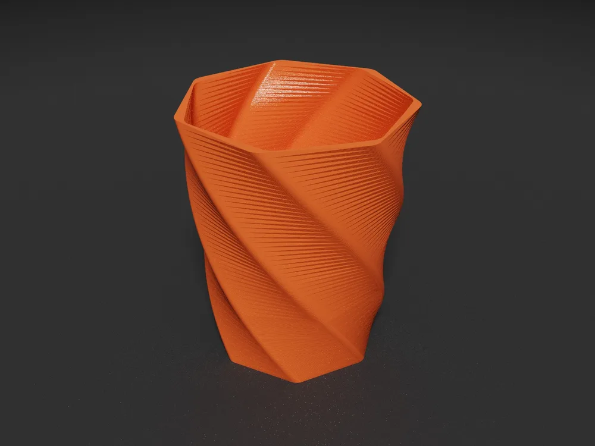

Render
0.24–0.41 s
Each change, in view
OpenSCAD runs with the Manifold backend. This is the range for the 72 meshes on this page.

CoCAD is the fast way to make models for 3D printing. An AI agent changes the OpenSCAD model over MCP. You see the new render and its print layers in seconds, and you catch errors before the printer does.
.deb | also for
The loop
Most of the time on a printable model goes to small changes and checks. CoCAD keeps that loop short. Pick a prompt and watch one turn.
Why it is fast
Render
0.24–0.41 s
OpenSCAD runs with the Manifold backend. This is the range for the 72 meshes on this page.
Slice
< 50 ms
See walls, infill and skin at real line width. You do not export or open a slicer for a first check.
Agent
16 tools
The agent reads the render state, the OpenSCAD log, open edges and slice data. Then it fixes what it finds.
Finish
STL 3MF STEP
Export from the window or through the agent. Render a studio photo of the part if you want one.
MCP server Next release
The client starts cocad mcp. Each tool call goes to the open window, so you see every change as it happens.
claude_desktop_config.json
{
"mcpServers": {
"cocad": {
"command": "cocad",
"args": ["mcp"]
}
}
}Claude Code
claude mcp add cocad -- cocad mcp| get_state | File, render status, last error, mesh data, OpenSCAD log |
|---|---|
| get_params | All Customizer parameters with limits and options |
| get_source | Source of the .scad file |
| view_model | Render an image and return it to the client |
| open_model | Open a file. Starts the app when it is not running |
| set_params reset_params | Change or reset parameters, then render |
| render | Run OpenSCAD again |
| slice | Layers, filament, weight and a rough print time |
| export_model | Write STL, 3MF or STEP |
| save_photo | Write a path traced PNG |
| set_view | Tab, camera, wireframe, grid and slice layer |
| load_parameter_set save_parameter_set | Load or save a named set |
| list_windows select_window | Choose a window when more than one is open |
overwrite.Tour
Real screenshots of the example models.
Slice preview. Walls, infill and skin as round strands, with a layer slider and a time, length and weight estimate.
Photo render
The path tracer makes a studio photo of the current view. The agent can run it too, or you can use the CLI.
Command line
cocad photo model.scad -o model.png --size 1600x1200 --samples 256 --color ff9300 --finish satin --layer-linesFeatures
It reads the same comments as OpenSCAD. The model renders again when you change a value.
Keep your editor open. When the file changes on disk, the model reloads and your values stay.
Save named sets in the OpenSCAD .json format.
Walls, infill and skin, with a time, length and weight estimate. It writes no G-code.
Size, volume, triangles and open edges. Back faces show in purple.
AP214 with planar faces. A closed mesh becomes one solid that CAD tools can edit.
The parameter values go in the metadata of the file.
Run export, slice and photo without the window.
Linux, Windows and macOS, with dark and light themes.
You also need OpenSCAD
Install a development snapshot. It has the Manifold backend. The 2021 release also works, but a model that takes 13 s with CGAL can take 0.3 s with Manifold.
Older versions and release notes are on GitHub releases.
FAQ
Claude Desktop, Claude Code and other MCP clients. The client talks to cocad mcp and that process talks to the open window.
Both. The agent reads the source with get_source. A client that can write files can edit the .scad file, and the window reloads it. set_params changes Customizer values with no file edit.
No. The slice is for preview only. It has no travel moves, supports or bridges, and it does not write G-code. Export a 3MF or STL for your slicer.
The mesh check shows open edges and back faces. The slice view shows each layer, so you can see gaps, thin walls and details that vanish. The OpenSCAD console shows script errors. The agent reads the same log and data.
CoCAD has no account and no server of its own. Usage analytics and error reports are optional, and each stays off until you accept it. The MCP server listens on 127.0.0.1 only. Your AI client sends what it reads to its own model provider, so pick the client with that in mind. See the Privacy Notice.
No. Open a file, move the sliders and use your own editor. The app works the same way. To turn the MCP server off, use File > Settings.
Nothing. It is open source under the MIT License.